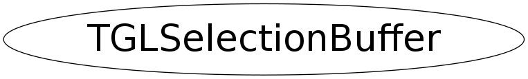

class TGLSelectionBuffer
TGLVertex3 3 component (x/y/z) vertex class This is part of collection of simple utility classes for GL only in TGLUtil.h/cxx. These provide const and non-const accessors Arr() & CArr() to a GL compatible internal field - so can be used directly with OpenGL C API calls - which TVector3 etc cannot (easily). They are not intended to be fully featured just provide minimum required.
Function Members (Methods)
public:
| TGLSelectionBuffer() | |
| virtual | ~TGLSelectionBuffer() |
| static TClass* | Class() |
| const UChar_t* | GetPixelColor(Int_t px, Int_t py) const |
| virtual TClass* | IsA() const |
| void | ReadColorBuffer(Int_t width, Int_t height) |
| void | ReadColorBuffer(Int_t x, Int_t y, Int_t width, Int_t height) |
| virtual void | ShowMembers(TMemberInspector& insp) |
| virtual void | Streamer(TBuffer& b) |
| void | StreamerNVirtual(TBuffer& b) |
private:
| TGLSelectionBuffer(const TGLSelectionBuffer&) | |
| TGLSelectionBuffer& | operator=(const TGLSelectionBuffer&) |
Class Charts
{kind=link}
{kind=link}
{kind=link}
{kind=link}

Function documentation
TGLColor& operator=(const TGLSelectionBuffer& )